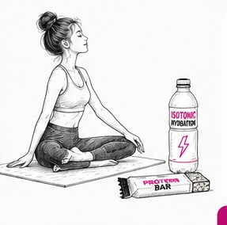

☕
Реальная среда
Кофе, перекус, дорога, встреча, тренировка. Реальный контекст — реальные эмоции.

Мы тестируем продукты в реальной среде — среди людей, которые уже живут, работают, тренируются, учатся и принимают решения о покупке. К каждому — свой подход.

Кофе, перекус, дорога, встреча, тренировка. Реальный контекст — реальные эмоции.
Если продукт требует готовки — приготовим по сценарию и выдержим температуру, время и подачу.
Посещаемость каждой точки — 50–150 человек в день. Быстрый доступ к живой аудитории.
Офлайн-опросы, дегустации, фокус-группы, интервью и видео-комментарии.
При серии исследований ниже стоимость каждого следующего теста и быстрее запуск.
Состав, польза, калорийность, функциональность и баланс вкуса.
Регулярные тренировки и высокие требования к функциональности продукта.
Влияют на выбор и частоту покупки. Важно услышать именно их мотивацию.
Выбирают для себя и семьи, оценивают пользу, рациональность, вкус и эмоции.
Следит за трендами, быстро реагирует на новинки, внешний вид и коммуникацию.
Люди в тренде, постоянно работающие и часто в стрессе. У них часто особое мнение на продукты.
Особенно — продукты питания: снеки, кондитерские изделия, напитки, молочные продукты, мясная гастрономия и другие категории.
Смотрим на результат глазами потребителя, технолога и маркетолога. Поэтому оцениваем продукт, упаковку, дизайн, claims, позиционирование и продвижение.
Когда нужно сравнить несколько образцов или сегментов и получить измеримые показатели на реальной аудитории.
Когда важно понять «почему». Раскрывает язык потребителя, глубинные мотивы, барьеры, отношение к идее, упаковке, дизайну и коммуникации.
Для выбора рецептуры, сравнения с конкурентом и оценки сенсорных параметров.
Первичный выбор, заметность, понятность, доверие, привлекательность и соответствие ожиданиям.
Ваша команда может сама услышать интонации, аргументы, сомнения и настоящие эмоции потребителей.
Для задач, где важна последовательная история выбора, сценарии потребления и персональные мотивы.
Бизнес-вопрос, ЦА и KPI.
Сценарий, анкета, критерии и порядок теста.
Выбираем кофейню из собственной базы.
Дегустации, опросы, A/B, интервью и фокус-группы.
Данные, сегменты, мотивы и инсайты.
По запросу — живые ответы потребителей.
Рекомендации и ТЗ на доработку.
Понимаем, что движет выбором.
Формируем конкретные изменения продукта или дизайна.
Помогаем внедрить выводы в продукт, упаковку и продвижение.
Проверяем новую версию и подтверждаем рост показателей.

✓ Посещаемость 50–150 человек в день на точку
✓ Разные районы Москвы и типы аудитории
✓ Возможность приготовить продукт непосредственно перед тестом
✓ Естественная среда потребления
✓ Быстрый набор нужной ЦА
✓ Экономия времени и бюджета на организацию отдельного холл-теста
✓ Возможность повторять исследования по единой методике
Для конкретной продуктовой задачи и быстрого решения.
от 190 000 ₽Несколько тестов в течение 3–6 месяцев для разработки или перезапуска линейки.
от 3 исследованийРегулярная программа на 3, 6 или 12 месяцев. Ниже стоимость каждого теста, быстрее запуск и накопление данных.
индивидуальные условияМожно начать с одного теста и затем перейти к регулярной программе.
rnd@lanny.group +7 (926) 372-86-63